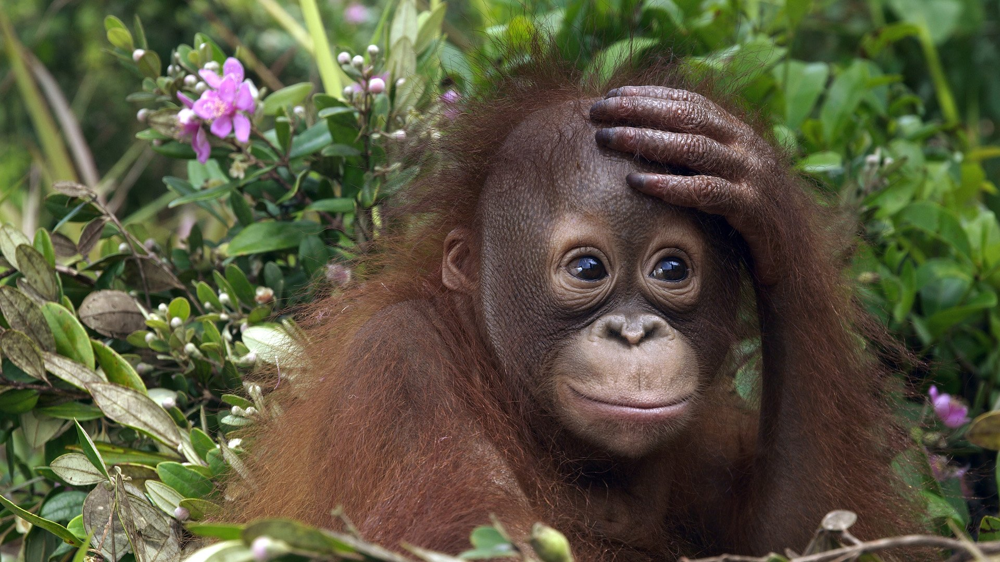
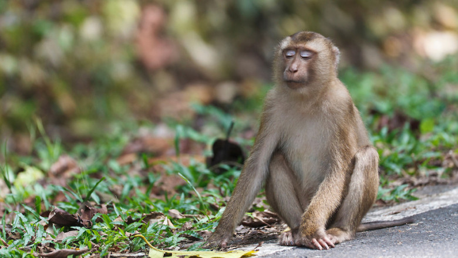
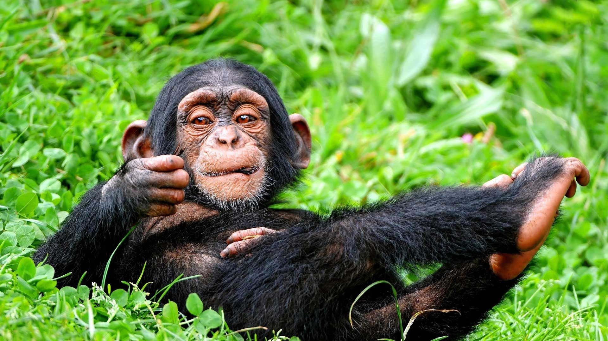

Životinja: Orangutan
Naučno ime: Pongo
Životni vek: 35 – 45 godina
Visina: 120 - 140 cm
Porodica: Majmuni Starog sveta
Masa: 50 – 100 kg
Orangutani provode najviše svog vremena na drveću, odnosno u krošnjama
gde se pare, hrane i spavaju. Samo mužjaci povremeno silaze na tlo u
potrazi za plodovima i drugom hranom. Svake noći orangutani prave
gnezdo od lišća i granja u kome će spavati. Manje su društveni od
drugih majmuna, a mužjaci i ženke se sastaju samo prilikom parenja, dok
se adolescentne ženke nekad zajedno kreću krpz šumu i 2-3 dana. Majke
ostaju s mladunčetom dok ono ne napuni šest do sedam godina. Polni
dimorfizam je prisutan kod orangutana: ženke su visine od 1,3 metara i
težine oko 45 kilograma, dok zreli odrasli mužjaci mogu biti 1,8
metara visoki i teški preko 118 kilograma. Odrasli mužjaci imaju
upadljive velike obraze i dužu dlaku. Objavljuju svoj položaj
otegnurim rikanjem. Svojim dugim nogama sa rasponom do 2.2 metra i
stopalima kojima može da se drži za grane, odlično je prilagođen životu
u krošnjama. Noge su mu vrlo savitljive, a koren šake, stopala, kukovi i
rameni zglobovi mogu da se okreću u svim pravcima.

Primati

Životinja: Makaki majmun
Naučno ime: Macaca
Životni vek: 20 – 27 godina
Visina: 41 cm
Porodica: Majmuni Starog sveta
Masa: 5 – 18 kg
Sve osim jedne vrste žive u Aziji. Areal berberskog makakija je u severozapadnoj Africi (Atlas planine) i na Gibraltaru u Evropi. Azijske vrste pretežno naseljavaju jug i jugoistok kontinenta. Najseverniji je japanski makaki. Veliki broj vrsta živi samo na ostrvu Celebes. Žive u velikim grupama. Neke vrste imaju dugačke repove, neke imaju kratke, a neke uopšte nemaju vidljiv rep.Većina makakija je smeđe boje, ali ima i crnih. Imaju ružičastu ili crvenu kožu lica i zadnjice. Krupniji su i imaju izušenija lica od gvenona, ali su manji i imaju kraća lica od pavijana.
Naučno ime: Macaca
Životni vek: 20 – 27 godina
Visina: 41 cm
Porodica: Majmuni Starog sveta
Masa: 5 – 18 kg
Sve osim jedne vrste žive u Aziji. Areal berberskog makakija je u severozapadnoj Africi (Atlas planine) i na Gibraltaru u Evropi. Azijske vrste pretežno naseljavaju jug i jugoistok kontinenta. Najseverniji je japanski makaki. Veliki broj vrsta živi samo na ostrvu Celebes. Žive u velikim grupama. Neke vrste imaju dugačke repove, neke imaju kratke, a neke uopšte nemaju vidljiv rep.Većina makakija je smeđe boje, ali ima i crnih. Imaju ružičastu ili crvenu kožu lica i zadnjice. Krupniji su i imaju izušenija lica od gvenona, ali su manji i imaju kraća lica od pavijana.


Životinja: Šimpanza
Naučno ime: Pan troglodytes
Životni vek: 39 – 45 godina
Visina: 120 cm
Porodica: Majmuni Starog sveta
Masa: 32 – 60 kg
Šimpanze naseljavaju tropske šume i vlažne savane zapadne i centralne Afrike. Nekada su živele po celom ovom regionu, ali njihovo stanište je dramatično smanjeno u skorašnjim godinama. Odrasli u divljini teže između 40 i 65 kg. Mužjaci su i do 160 cm visine, a ženke do 130 cm. Telo im je prekriveno grubom, tamnobraon dlakom, izuzev lica, prstiju, nožnih prctiju, dlanova i tabana. Palčevi su im postavljeni nasuprot ostalim prstima, tako da šimpanze imaju precizan i snažan stisak šake. Mužjaci imaju velike očnjake. Životni vek u zoološkim vrtovima je do 50 godina. Iako su svaštojedi, ishrana šimpanza je uglavnom vegetarijanska, i sastoji se od voća, lišća, semenki, koštunjavog voća, dopunjena insektima i manjim plenom. Šimpanze love i mlade leoparde, gazele i majmune kolobuse. Prijavljeni su i primeri kanibalizma. Bilo je i retkih slučajeva da su šimpanze napadale i mladu decu. Zapadnoafrička šimpanza je jedina životinja, osim čoveka, da redovno pravi i koristi specijalizovane alatke za lov. Posmatrane su šimpanze u Senegalu kao prave koplja, skidajući granje i koru sa stabla drveta, zašiljujući jedan kraj svojim zubima. Zatim bi ih koristili da ubiju galagose skrivene u šupljinama drveta.
Naučno ime: Pan troglodytes
Životni vek: 39 – 45 godina
Visina: 120 cm
Porodica: Majmuni Starog sveta
Masa: 32 – 60 kg
Šimpanze naseljavaju tropske šume i vlažne savane zapadne i centralne Afrike. Nekada su živele po celom ovom regionu, ali njihovo stanište je dramatično smanjeno u skorašnjim godinama. Odrasli u divljini teže između 40 i 65 kg. Mužjaci su i do 160 cm visine, a ženke do 130 cm. Telo im je prekriveno grubom, tamnobraon dlakom, izuzev lica, prstiju, nožnih prctiju, dlanova i tabana. Palčevi su im postavljeni nasuprot ostalim prstima, tako da šimpanze imaju precizan i snažan stisak šake. Mužjaci imaju velike očnjake. Životni vek u zoološkim vrtovima je do 50 godina. Iako su svaštojedi, ishrana šimpanza je uglavnom vegetarijanska, i sastoji se od voća, lišća, semenki, koštunjavog voća, dopunjena insektima i manjim plenom. Šimpanze love i mlade leoparde, gazele i majmune kolobuse. Prijavljeni su i primeri kanibalizma. Bilo je i retkih slučajeva da su šimpanze napadale i mladu decu. Zapadnoafrička šimpanza je jedina životinja, osim čoveka, da redovno pravi i koristi specijalizovane alatke za lov. Posmatrane su šimpanze u Senegalu kao prave koplja, skidajući granje i koru sa stabla drveta, zašiljujući jedan kraj svojim zubima. Zatim bi ih koristili da ubiju galagose skrivene u šupljinama drveta.